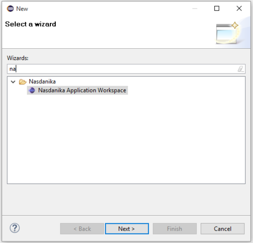
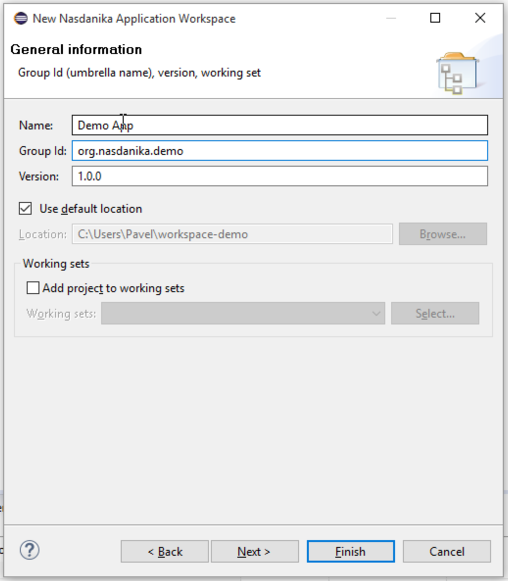
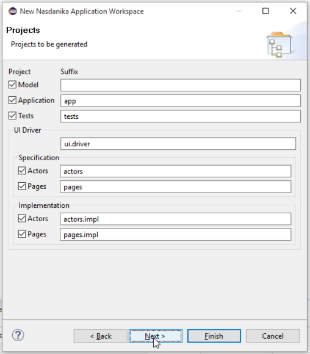
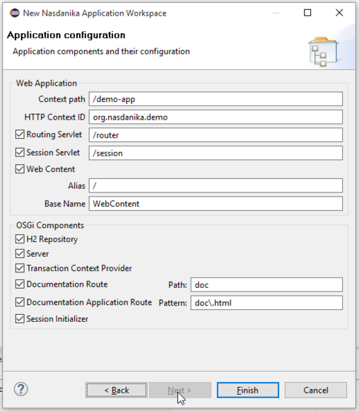
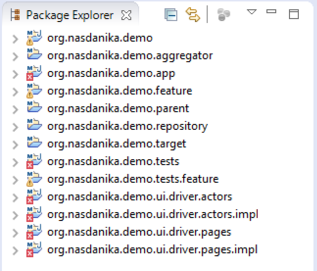
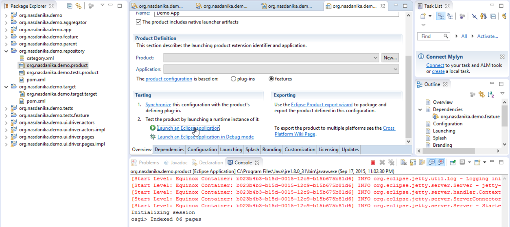
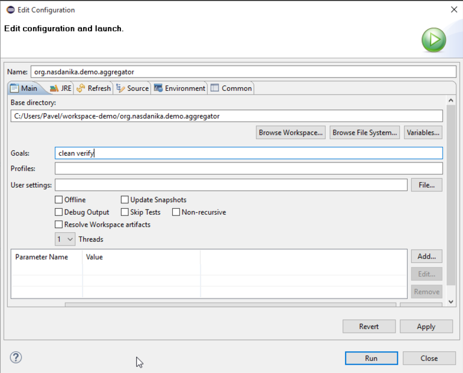
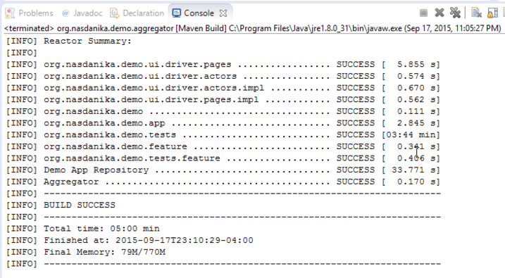
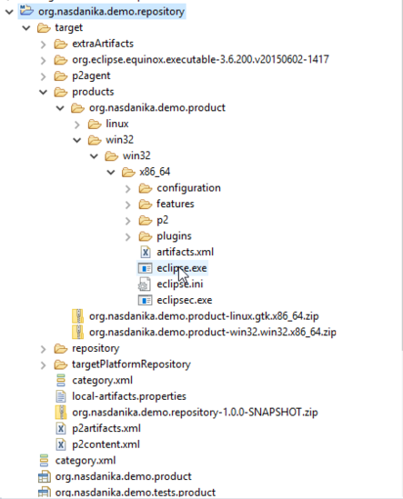
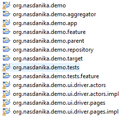

Nasdanika Application Workspace Wizard generates a set of projects which constitute Nasdanika Foundation Server Application.
This 6 minutes video demonstrates how to:
M2E) - generation will fail if M2E is not installed. To install go to
Help > Eclipse Marketplace.
pom.xml files will show errors if not installed. To install go to
Preferences > Maven > Discovery, click
Open Catalog.
To start the wizard click
File > New > Other or click
Ctrl-N and then select "Nasdanika Application Workspace":

The wizard opens the general information page where you can enter application name, group ID, specify location and select a working set to add newly generated project to:

Group ID is used in
pom.xml files and as a base name for projects. Click
Next to navigate to the projects page:

Projects:
Uncheck projects which you don't need, modify default suffixes, if needed, and click
Next. If application project was selected, then the application page will open:

Modify default selections and values if needed:
Click
Finish. After several seconds the wizard will generate workspace projects and Eclipse will build them. There will be errors:

Open the target definition file in the target project. Wait until the target is resolved and then click "Set as Target Platform", after workspace re-build errors shall disappear.
Open the product file in the repository project and click
Launch an Eclipse Application.

Once you see
Indexed X pages in the OSGi console open a web browser and navigate to the application route, e.g.
http://localhost:8080/demo-app/router/demo-app.html. Then open the documentation application, e.g.
http://localhost:8080/demo-app/router/doc.html.
Issue
shutdown command in the OSGi console to stop the application. If the application doesn't terminate after a couple of seconds, issue another command, e.g.
ss.
Right-click on the
pom.xml file in the aggregator project and select
Run as > Maven Build, enter
clean verify to the goals input:

Click
Run. Maven will build projects, execute UI tests, and build the Eclipse product for the application. By default UI tests use
Firefox Web browser. If Firefox is not available, modify tests code to use a different driver. When build finishes you should see console output similar to the one shown below:

Refresh the repository product and then open
target/products/.../x86_64 (or another folder depending on your OS):

Double-click
eclipse.exe. A console window will open. Give the application several seconds to start and open a web browser. Navigate to the application route and documentation route and then shut down the application as described in the "Start application from Eclipse" above.

See also:
After completing the steps described above you will have a functional Nasdanika Foundation Server (OSGi/CDO) web application: